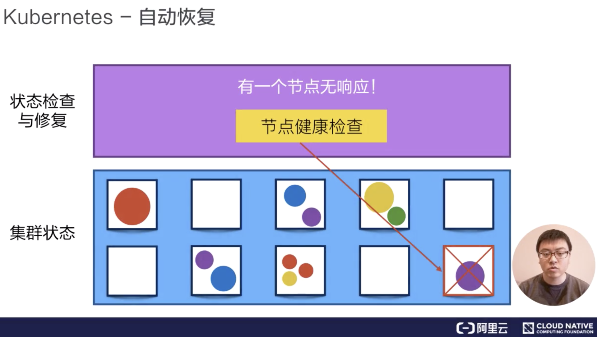
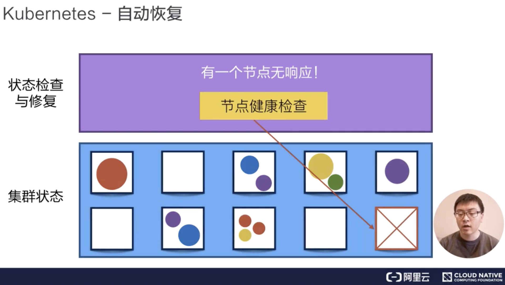
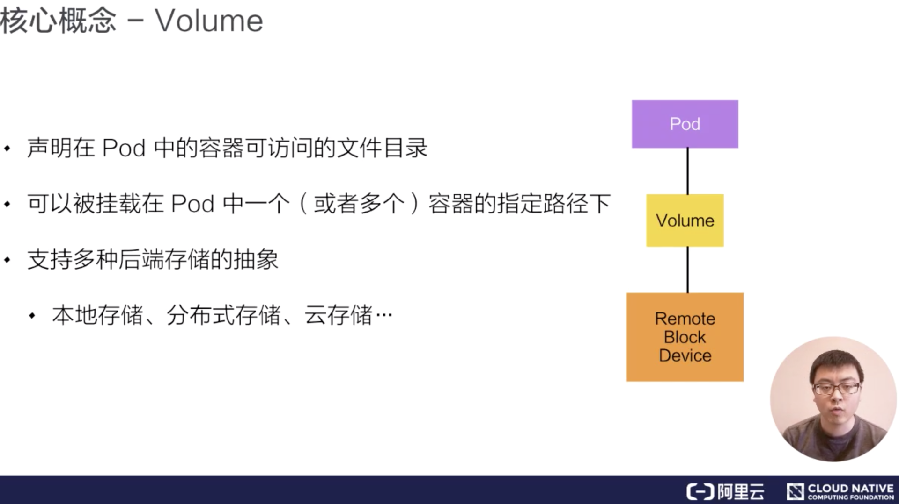
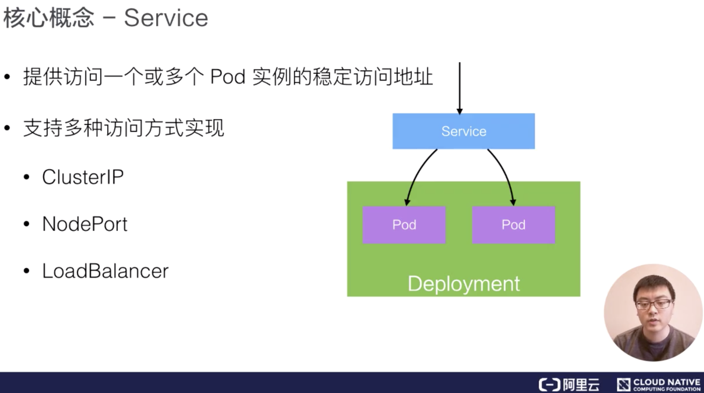
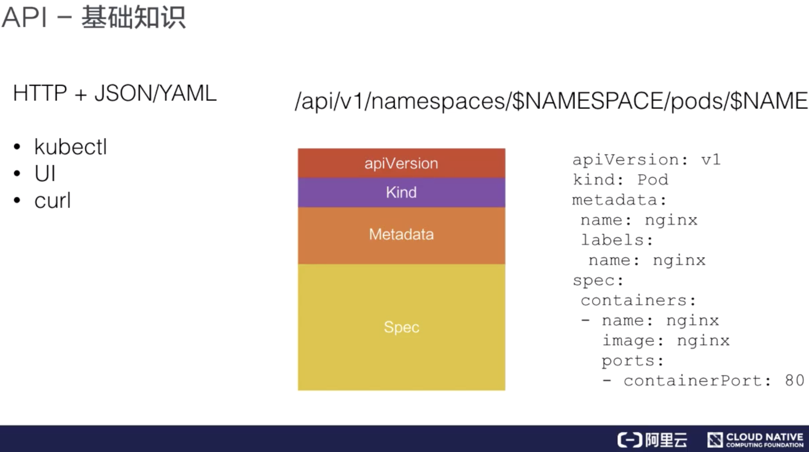
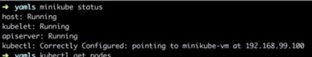
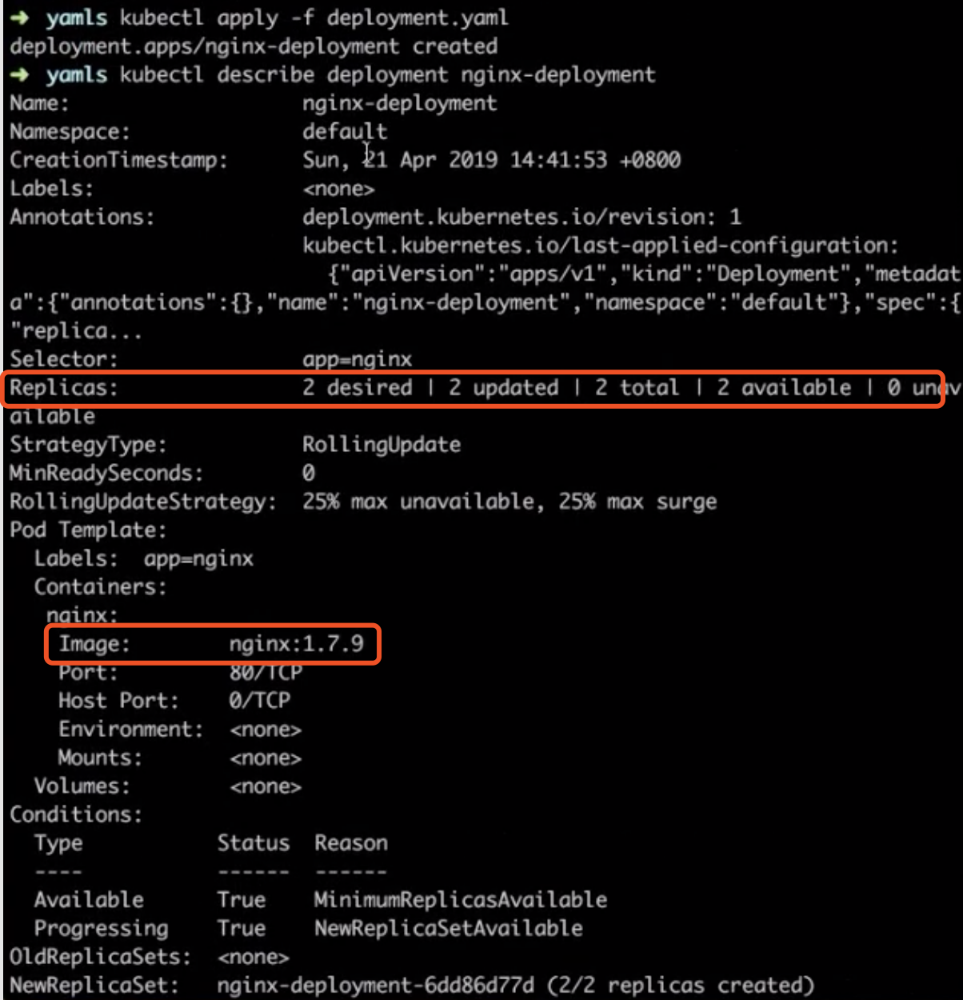
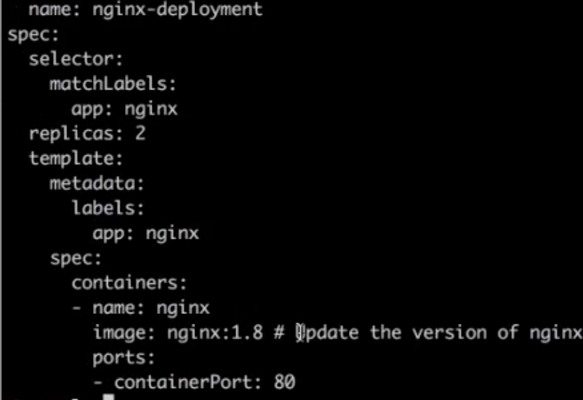
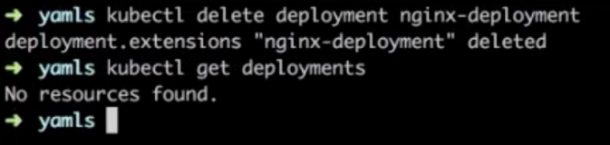

- 01 第一堂“云原生”课.md.html
- 02 容器基本概念.md.html
- 03 Kubernetes 核心概念.md.html
- 04 理解 Pod 和容器设计模式.md.html
- 05 应用编排与管理：核心原理.md.html
- 06 应用编排与管理.md.html
- 07 应用编排与管理：Job & DaemonSet.md.html
- 08 应用配置管理.md.html
- 09 应用存储和持久化数据卷：核心知识.md.html
- 10 应用存储和持久化数据卷：存储快照与拓扑调度(至天).md.html
- 11 可观测性：你的应用健康吗？（莫源）.md.html
- 12 可观测性-监控与日志（莫源）.md.html
- 13 Kubernetes 网络概念及策略控制（叶磊）.md.html
- 14 Kubernetes Service（溪恒）.md.html
- 15 从 0 开始创作云原生应用（殷达）.md.html
- 16 深入解析 Linux 容器（华敏）.md.html
03 Kubernetes 核心概念
什么是 Kubernetes
Kubernetes，从官方网站上可以看到，它是一个工业级的容器编排平台。Kubernetes 这个单词是希腊语，它的中文翻译是“舵手”或者“飞行员”。在一些常见的资料中也会看到“ks”这个词，也就是“k8s”，它是通过将8个字母“ubernete ”替换为“8”而导致的一个缩写。
Kubernetes 为什么要用“舵手”来命名呢？大家可以看一下这张图：
这是一艘载着一堆集装箱的轮船，轮船在大海上运着集装箱奔波，把集装箱送到它们该去的地方。我们之前其实介绍过一个概念叫做 container，container 这个英文单词也有另外的一个意思就是“集装箱”。Kubernetes 也就借着这个寓意，希望成为运送集装箱的一个轮船，来帮助我们管理这些集装箱，也就是管理这些容器。
这个就是为什么会选用 Kubernetes 这个词来代表这个项目的原因。更具体一点地来说：Kubernetes 是一个自动化的容器编排平台，它负责应用的部署、应用的弹性以及应用的管理，这些都是基于容器的。
Kubernetes 有如下几个核心的功能
- 服务的发现与负载的均衡；
- 容器的自动装箱，我们也会把它叫做 scheduling，就是“调度”，把一个容器放到一个集群的某一个机器上，Kubernetes 会帮助我们去做存储的编排，让存储的声明周期与容器的生命周期能有一个连接；
- Kubernetes 会帮助我们去做自动化的容器的恢复。在一个集群中，经常会出现宿主机的问题或者说是 OS 的问题，导致容器本身的不可用，Kubernetes 会自动地对这些不可用的容器进行恢复；
- Kubernetes 会帮助我们去做应用的自动发布与应用的回滚，以及与应用相关的配置密文的管理；
- 对于 job 类型任务，Kubernetes 可以去做批量的执行；
- 为了让这个集群、这个应用更富有弹性，Kubernetes 也支持水平的伸缩。
下面，我们希望以三个例子跟大家更切实地介绍一下 Kubernetes 的能力。
调度
Kubernetes 可以把用户提交的容器放到 Kubernetes 管理的集群的某一台节点上去。Kubernetes 的调度器是执行这项能力的组件，它会观察正在被调度的这个容器的大小、规格。
比如说它所需要的 CPU以及它所需要的 memory，然后在集群中找一台相对比较空闲的机器来进行一次 placement，也就是一次放置的操作。在这个例子中，它可能会把红颜色的这个容器放置到第二个空闲的机器上，来完成一次调度的工作。
自动修复
Kubernetes 有一个节点健康检查的功能，它会监测这个集群中所有的宿主机，当宿主机本身出现故障，或者软件出现故障的时候，这个节点健康检查会自动对它进行发现。
下面 Kubernetes 会把运行在这些失败节点上的容器进行自动迁移，迁移到一个正在健康运行的宿主机上，来完成集群内容器的一个自动恢复。
 
水平伸缩
Kubernetes 有业务负载检查的能力，它会监测业务上所承担的负载，如果这个业务本身的 CPU 利用率过高，或者响应时间过长，它可以对这个业务进行一次扩容。
比如说在下面的例子中，黄颜色的过度忙碌，Kubernetes 就可以把黄颜色负载从一份变为三份。接下来，它就可以通过负载均衡把原来打到第一个黄颜色上的负载平均分到三个黄颜色的负载上去，以此来提高响应的时间。
以上就是 Kubernetes 三个核心能力的简单介绍。
Kubernetes 的架构
Kubernetes 架构是一个比较典型的二层架构和 server-client 架构。Master 作为中央的管控节点，会去与 Node 进行一个连接。
所有 UI 的、clients、这些 user 侧的组件，只会和 Master 进行连接，把希望的状态或者想执行的命令下发给 Master，Master 会把这些命令或者状态下发给相应的节点，进行最终的执行。
Kubernetes 的 Master 包含四个主要的组件：API Server、Controller、Scheduler 以及 etcd。如下图所示：
- API Server： 顾名思义是用来处理 API 操作的，Kubernetes 中所有的组件都会和 API Server 进行连接，组件与组件之间一般不进行独立的连接，都依赖于 API Server 进行消息的传送；
- Controller： 是控制器，它用来完成对集群状态的一些管理。比如刚刚我们提到的两个例子之中，第一个自动对容器进行修复、第二个自动进行水平扩张，都是由 Kubernetes 中的 Controller 来进行完成的；
- Scheduler： 是调度器，“调度器”顾名思义就是完成调度的操作，就是我们刚才介绍的第一个例子中，把一个用户提交的 Container，依据它对 CPU、对 memory 请求大小，找一台合适的节点，进行放置；
- etcd： 是一个分布式的一个存储系统，API Server 中所需要的这些原信息都被放置在 etcd 中，etcd 本身是一个高可用系统，通过 etcd 保证整个 Kubernetes 的 Master 组件的高可用性。
我们刚刚提到的 API Server，它本身在部署结构上是一个可以水平扩展的一个部署组件；Controller 是一个可以进行热备的一个部署组件，它只有一个 active，它的调度器也是相应的，虽然只有一个 active，但是可以进行热备。
Kubernetes 的架构：Node
Kubernetes 的 Node 是真正运行业务负载的，每个业务负载会以 Pod 的形式运行。等一下我会介绍一下 Pod 的概念。一个 Pod 中运行的一个或者多个容器，真正去运行这些 Pod 的组件的是叫做 kubelet，也就是 Node 上最为关键的组件，它通过 API Server 接收到所需要 Pod 运行的状态，然后提交到我们下面画的这个 Container Runtime 组件中。
在 OS 上去创建容器所需要运行的环境，最终把容器或者 Pod 运行起来，也需要对存储跟网络进行管理。Kubernetes 并不会直接进行网络存储的操作，他们会靠 Storage Plugin 或者是网络的 Plugin 来进行操作。用户自己或者云厂商都会去写相应的 Storage Plugin 或者 Network Plugin，去完成存储操作或网络操作。
在 Kubernetes 自己的环境中，也会有 Kubernetes 的 Network，它是为了提供 Service network 来进行搭网组网的。（等一下我们也会去介绍“service”这个概念。）真正完成 service 组网的组件的是 Kube-proxy，它是利用了 iptable 的能力来进行组建 Kubernetes 的 Network，就是 cluster network，以上就是 Node 上面的四个组件。
Kubernetes 的 Node 并不会直接和 user 进行 interaction，它的 interaction 只会通过 Master。而 User 是通过 Master 向节点下发这些信息的。Kubernetes 每个 Node 上，都会运行我们刚才提到的这几个组件。
下面我们以一个例子再去看一下 Kubernetes 架构中的这些组件，是如何互相进行 interaction 的。
用户可以通过 UI 或者 CLI 提交一个 Pod 给 Kubernetes 进行部署，这个 Pod 请求首先会通过 CLI 或者 UI 提交给 Kubernetes API Server，下一步 API Server 会把这个信息写入到它的存储系统 etcd，之后 Scheduler 会通过 API Server 的 watch 或者叫做 notification 机制得到这个信息：有一个 Pod 需要被调度。
这个时候 Scheduler 会根据它的内存状态进行一次调度决策，在完成这次调度之后，它会向 API Server report 说：“OK！这个 Pod 需要被调度到某一个节点上。”
这个时候 API Server 接收到这次操作之后，会把这次的结果再次写到 etcd 中，然后 API Server 会通知相应的节点进行这次 Pod 真正的执行启动。相应节点的 kubelet 会得到这个通知，kubelet 就会去调 Container runtime 来真正去启动配置这个容器和这个容器的运行环境，去调度 Storage Plugin 来去配置存储，network Plugin 去配置网络。
这个例子我们可以看到：这些组件之间是如何相互沟通相互通信，协调来完成一次Pod的调度执行操作的。
Kubernetes 的核心概念与它的 API
核心概念
第一个概念：Pod
Pod 是 Kubernetes 的一个最小调度以及资源单元。用户可以通过 Kubernetes 的 Pod API 生产一个 Pod，让 Kubernetes 对这个 Pod 进行调度，也就是把它放在某一个 Kubernetes 管理的节点上运行起来。一个 Pod 简单来说是对一组容器的抽象，它里面会包含一个或多个容器。
比如像下面的这幅图里面，它包含了两个容器，每个容器可以指定它所需要资源大小。比如说，一个核一个 G，或者说 0.5 个核，0.5 个 G。
当然在这个 Pod 中也可以包含一些其他所需要的资源：比如说我们所看到的 Volume 卷这个存储资源；比如说我们需要 100 个 GB 的存储或者 20GB 的另外一个存储。
在 Pod 里面，我们也可以去定义容器所需要运行的方式。比如说运行容器的 Command，以及运行容器的环境变量等等。Pod 这个抽象也给这些容器提供了一个共享的运行环境，它们会共享同一个网络环境，这些容器可以用 localhost 来进行直接的连接。而 Pod 与 Pod 之间，是互相有 isolation 隔离的。
第二个概念：Volume
Volume 就是卷的概念，它是用来管理 Kubernetes 存储的，是用来声明在 Pod 中的容器可以访问文件目录的，一个卷可以被挂载在 Pod 中一个或者多个容器的指定路径下面。
而 Volume 本身是一个抽象的概念，一个 Volume 可以去支持多种的后端的存储。比如说 Kubernetes 的 Volume 就支持了很多存储插件，它可以支持本地的存储，可以支持分布式的存储，比如说像 ceph，GlusterFS ；它也可以支持云存储，比如说阿里云上的云盘、AWS 上的云盘、Google 上的云盘等等。

第三个概念：Deployment
Deployment 是在 Pod 这个抽象上更为上层的一个抽象，它可以定义一组 Pod 的副本数目、以及这个 Pod 的版本。一般大家用 Deployment 这个抽象来做应用的真正的管理，而 Pod 是组成 Deployment 最小的单元。
Kubernetes 是通过 Controller，也就是我们刚才提到的控制器去维护 Deployment 中 Pod 的数目，它也会去帮助 Deployment 自动恢复失败的 Pod。
比如说我可以定义一个 Deployment，这个 Deployment 里面需要两个 Pod，当一个 Pod 失败的时候，控制器就会监测到，它重新把 Deployment 中的 Pod 数目从一个恢复到两个，通过再去新生成一个 Pod。通过控制器，我们也会帮助完成发布的策略。比如说进行滚动升级，进行重新生成的升级，或者进行版本的回滚。
第四个概念：Service
Service 提供了一个或者多个 Pod 实例的稳定访问地址。
比如在上面的例子中，我们看到：一个 Deployment 可能有两个甚至更多个完全相同的 Pod。对于一个外部的用户来讲，访问哪个 Pod 其实都是一样的，所以它希望做一次负载均衡，在做负载均衡的同时，我只想访问某一个固定的 VIP，也就是 Virtual IP 地址，而不希望得知每一个具体的 Pod 的 IP 地址。
我们刚才提到，这个 pod 本身可能 terminal go（终止），如果一个 Pod 失败了，可能会换成另外一个新的。
对一个外部用户来讲，提供了多个具体的 Pod 地址，这个用户要不停地去更新 Pod 地址，当这个 Pod 再失败重启之后，我们希望有一个抽象，把所有 Pod 的访问能力抽象成一个第三方的一个 IP 地址，实现这个的 Kubernetes 的抽象就叫 Service。
实现 Service 有多种方式，Kubernetes 支持 Cluster IP，上面我们讲过的 kuber-proxy 的组网，它也支持 nodePort、 LoadBalancer 等其他的一些访问的能力。

第五个概念：Namespace
Namespace 是用来做一个集群内部的逻辑隔离的，它包括鉴权、资源管理等。Kubernetes 的每个资源，比如刚才讲的 Pod、Deployment、Service 都属于一个 Namespace，同一个 Namespace 中的资源需要命名的唯一性，不同的 Namespace 中的资源可以重名。
Namespace 一个用例，比如像在阿里巴巴，我们内部会有很多个 business units，在每一个 business units 之间，希望有一个视图上的隔离，并且在鉴权上也不一样，在 cuda 上面也不一样，我们就会用 Namespace 来去给每一个 BU 提供一个他所看到的这么一个看到的隔离的机制。
Kubernetes 的 API
下面我们介绍一下 Kubernetes 的 API 的基础知识。从 high-level 上看，Kubernetes API 是由 HTTP+JSON 组成的：用户访问的方式是 HTTP，访问的 API 中 content 的内容是 JSON 格式的。
Kubernetes 的 kubectl 也就是 command tool，Kubernetes UI，或者有时候用 curl，直接与 Kubernetes 进行沟通，都是使用 HTTP + JSON 这种形式。
下面有个例子：比如说，对于这个 Pod 类型的资源，它的 HTTP 访问的路径，就是 API，然后是 apiVesion: V1, 之后是相应的 Namespaces，以及 Pods 资源，最终是 Podname，也就是 Pod 的名字。

如果我们去提交一个 Pod，或者 get 一个 Pod 的时候，它的 content 内容都是用 JSON 或者是 YAML 表达的。上图中有个 yaml 的例子，在这个 yaml file 中，对 Pod 资源的描述也分为几个部分。
第一个部分，一般来讲会是 API 的 version。比如在这个例子中是 V1，它也会描述我在操作哪个资源；比如说我的 kind 如果是 pod，在 Metadata 中，就写上这个 Pod 的名字；比如说 nginx，我们也会给它打一些 label，我们等下会讲到 label 的概念。在 Metadata 中，有时候也会去写 annotation，也就是对资源的额外的一些用户层次的描述。
比较重要的一个部分叫做 Spec，Spec 也就是我们希望 Pod 达到的一个预期的状态。比如说它内部需要有哪些 container 被运行；比如说这里面有一个 nginx 的 container，它的 image 是什么？它暴露的 port 是什么？
当我们从 Kubernetes API 中去获取这个资源的时候，一般来讲在 Spec 下面会有一个项目叫 status，它表达了这个资源当前的状态；比如说一个 Pod 的状态可能是正在被调度、或者是已经 running、或者是已经被 terminates，就是被执行完毕了。
刚刚在 API 之中，我们讲了一个比较有意思的 metadata 叫做“label”，这个 label 可以是一组 KeyValuePair。
比如下图的第一个 pod 中，label 就可能是一个 color 等于 red，即它的颜色是红颜色。当然你也可以加其他 label，比如说 size: big 就是大小，定义为大的，它可以是一组 label。
这些 label 是可以被 selector，也就是选择器所查询的。这个能力实际上跟我们的 sql 类型的 select 语句是非常相似的，比如下图中的三个 Pod 资源中，我们就可以进行 select。name color 等于 red，就是它的颜色是红色的，我们也可以看到，只有两个被选中了，因为只有他们的 label 是红色的，另外一个 label 中写的 color 等于 yellow，也就是它的颜色是黄色，是不会被选中的。
通过 label，kubernetes 的 API 层就可以对这些资源进行一个筛选，那这些筛选也是 kubernetes 对资源的集合所表达默认的一种方式。
例如说，我们刚刚介绍的 Deployment，它可能是代表一组的 Pod，它是一组 Pod 的抽象，一组 Pod 就是通过 label selector 来表达的。当然我们刚才讲到说 service 对应的一组 Pod，就是一个 service 要对应一个或者多个的 Pod，来对它们进行统一的访问，这个描述也是通过 label selector 来进行 select 选取的一组 Pod。
所以可以看到 label 是一个非常核心的 kubernetes API 的概念，我们在接下来的课程中也会着重地去讲解和介绍 label 这个概念，以及如何更好地去使用它。
以一个 demo 结尾
最后一部分，我想以一个例子来结束，让大家跟我一起来尝试一个 kubernetes，在尝试 Kubernetes 之前，我希望大家能在本机上安装一下 Kubernetes，安装一个 Kubernetes 沙箱环境。
安装这个沙箱环境，主要有三个步骤：
-
首先需要安装一个虚拟机，来在虚拟机中启动 Kubernetes。我们会推荐大家利用 virtualbox 来作为虚拟机的运行环境；
安装 VirtualBox： https://www.virtualbox.org/wiki/Downloads
-
其次我们需要在虚拟机中启动 Kubernetes，Kubernetes 有一个非常有意思的项目，叫 minikube，也就是启动一个最小的 local 的 Kubernetes 的一个环境。
minikube 我们推荐使用下面写到的阿里云的版本，它和官方 minikube 的主要区别就是把 minikube 中所需要的 Google 上的依赖换成国内访问比较快的一些镜像，这样就方便了大家的安装工作；
安装 MiniKube（中国版）: https://yq.aliyun.com/articles/221687
-
最后在安装完 virtualbox 和 minikube 之后，大家可以对 minikube 进行启动，也就是下面这个命令。
启动命令：minikube start —vm-driver virtualbox
如果大家不是 Mac 系统，其他操作系统请访问下面这个链接，查看其它操作系统如何安装 minikube 沙箱环境。
https://kubernetes.io/docs/tasks/tools/install-minikube/
当大家安装好之后，我会跟大家一起做一个例子，来做三件事情：
-
提交一个 nginx deployment；
kubectl apply -f https://k8s.io/examples/application/deployment.yaml
-
升级 nginx deployment；
kubectl apply -f https://k8s.io/examples/application/deployment-update.yaml
-
扩容 nginx deployment。
kubectl apply -f https://k8s.io/examples/application/deployment-update.yaml
第一步，我们提交一个 nginx 的 Deployment，然后对这个 Deployment 进行一次版本升级，也就是改变它中间 Pod 的版本。最后我们也会尝试对 nginx 进行一次扩容，进行一次水平的伸缩，下面就让大家一起跟我来尝试这三个操作吧。
首先，我们先看一下 minikube 的 status，可以看到 kubelet master 和 kubectl 都是配置好的。

下一步我们利用 kubectl 来看一下这个集群中节选的状态，可以看到这个master 的节点已经是 running 状态：
我们就以这个为节点，下面我们尝试去看一下现在集群中 Deployment 这个资源：
可以看到集群中没有任何的 Deployment，我们可以利用 watch 这个语义去看集群中 Deployment 这个资源的变化情况。
下面我们去做刚才想要的三个操作：第一个操作是去创建一个 Deployment。可以看到下面第一个图，这是一个 API 的 content，它的 kind 是 Deployment，name 是 nginx-deployment, 有图中它的 replicas 数目是2，它的镜像版本是 1.7.9。
我们下面还是回到 kubectl 这个 commnd 来执行这次 Deployment 的真正的操作。我们可以看到一个简单的操作，就会去让 Deployment 不停地生成副本。
Deployment 副本数目是 2 个，下面也可以 describe 一下现在的 Deployment 的状态。我们知道之前是没有这个 Deployment 的，现在我们去 describe 这个 nginx-deployment。
下图中可以看到：有一个 nginx-deployment 已经被生成了，它的 replicas 数目也是我们想要的、selector 也是我们想要的、它的 image 的版本也是 1.7.9。还可以看到，里面的 deployment-controller 这种版本控制器也是在管理它的生成。

下面我们去升级这个 Deployment 版本，首先下载另外一个 yaml 文件 deployment-update.yaml，可以看到这里面的 image 本身的版本号从 1.7.9 升级到 1.8。

接下来我们重新 apply 新的 deployment-update 这个 yaml 文件。
可以看到，在另一边的屏幕上显示出了这个 Deployment 升级的一些操作，最终它的 up-to-date 值从 0 变成了 2，也就是说所有的容器都是最新版本的，所有的 Pod 都是最新版本的。我们也可以 discribe 具体去看一下是不是所有 Pod 的版本都被更新了，可以看到这个 image 的版本由 1.7.9 真正更新到了 1.8。
最后，我们也可以看到 controller 又执行了几次新的操作，这个控制器维护了整个 Deployment 和 Pod 状态。
最后我们演示一下给 Deployment 做水平扩张，下载另一个 yaml 文件 deployment-scale.yaml，这里面的 replicas 数目已经从 2 改成了 4。
回到最开始的窗口，用 kubectl 去 apply 这个新的 deployment-scale.yaml 文件，在另外一个窗口上可以看到，当我们执行了 deployment-scale 操作之后，它的容器 Pod 数目从 2 变成了 4。我们可以再一次 describ 一下当前集群中的 deployment 的情况，可以看到它的 replicas 的数目从 2 变到了 4，同时也可以看到 controller 又做了几次新的操作，这个 scale up 成功了。
最后，让我们利用 delete 操作把我们刚才生成的 Deployment 给删除掉。kubectl delete deployment，也是刚才我们本身的 deployment name，当我们把它删除掉之后，我们今天所有的操作就完成了。
我们再去重新 get 这个 Deployment，也会显示这个资源不再存在，这个集群又回到了最开始干净的状态。

以上这就是这堂课中所有的内容了，我们关注了 kubernetes 的核心概念以及 kubernetes 的架构设计，希望大家能在这节课中有所收获，也希望大家能关注云原生技术课堂中的其他内容，谢谢大家的观看！
本节总结
- Kubernetes 是一个自动化的容器编排平台，它负责应用的部署、应用的弹性以及应用的管理，这些都是基于容器的；
- Kubernetes 架构是一个比较典型的二层架构和 server-client 架构。